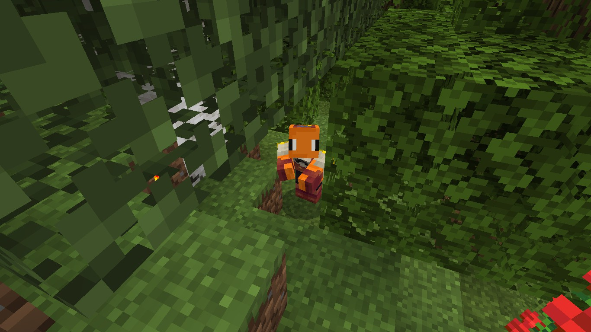

Goldfish Disease
----------
The Goldfish Disease became prominent after people started playing in groups. Coming near certain people result in your own skin being swapped with theirs,
and vice versa. This disease occurs on the server side as result to a glitch; and it only applies on imported custom skins. Marketplace skins are safe from this disease.
Although annoying, this disease is completely harmless.
